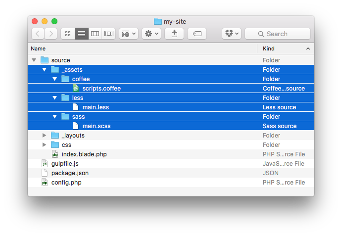
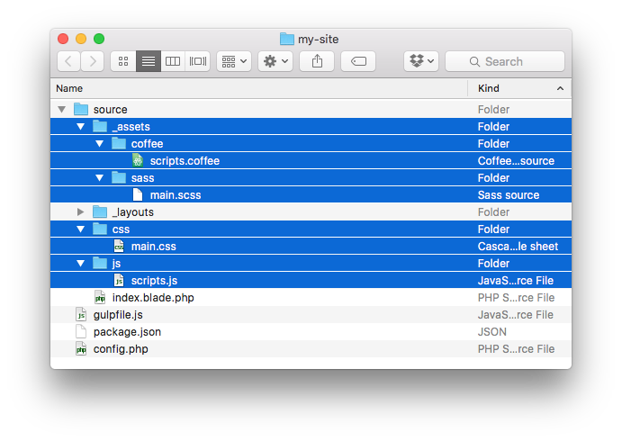

Brought to you by Tighten Co.
Jigsaw sites are configured with support for Laravel Elixir out of the box. If you've ever used Elixir in a Laravel project, you already know how to use Elixir with Jigsaw.
To get started, first make sure you have Node.js and NPM installed in your environment.
Once you have Node.js and NPM installed, pull in the dependencies needed to compile your assets:
$ npm installFor more detailed installation instructions, check out the full Elixir documentation.
By default, any assets you want to process with Elixir should live in source/_assets:

Elixir looks for each asset type (like Sass, Less, or Coffeescript) in a subfolder named after that asset type. We recommend following this convention to avoid additional configuration.
By default, once your assets are compiled, they will be placed in their corresponding directories, directly under the source folder:

If you'd like to change the source and destination folders for your assets, edit the following lines in gulpfile.js:
elixir.config.assetsPath = 'source/_assets';
elixir.config.publicPath = 'source';Jigsaw ships with the following gulpfile.js and is configured to use Sass out of the box:
var gulp = require('gulp');
var elixir = require('laravel-elixir');
elixir.config.assetsPath = 'source/_assets';
elixir.config.publicPath = 'source';
elixir(function(mix) {
mix.sass('main.scss')
.exec('jigsaw build', ['./source/**/*', '!./source/_assets/**/*'])
.browserSync({
server: { baseDir: 'build_local' },
proxy: null,
files: [ 'build_local/**/*' ]
});
});If you'd like to switch to Less, use Coffeescript, or take advantage of any other Elixir features, feel free to edit this file to your heart's content.
Here's an example of what it might look like to use Less and Coffeescript:
var gulp = require('gulp');
var elixir = require('laravel-elixir');
elixir.config.assetsPath = 'source/_assets';
elixir.config.publicPath = 'source';
elixir(function(mix) {
mix.less('main.less')
.coffee('scripts.coffee')
.exec('jigsaw build', ['./source/**/*', '!./source/_assets/**/*'])
.browserSync({
server: { baseDir: 'build_local' },
proxy: null,
files: [ 'build_local/**/*' ]
});
});To compile your assets, run:
$ gulpOnce the assets have been compiled, jigsaw build will be run again automatically, so you can preview your changes in the browser.
Manually running gulp every time you make a change gets old pretty fast.
Instead, you can run the following command to watch your project for changes:
$ gulp watchAny time any file changes in your project, your assets will be recompiled and Jigsaw will regenerate your static HTML pages.
Using gulp watch also enables Browsersync, so your browser will automatically reload any time you make a change. It also manages serving your site locally for you, so you don't need to start your own local PHP server.
You can also watch a specific environment by passing the --env flag to gulp:
$ gulp watch --env=staging